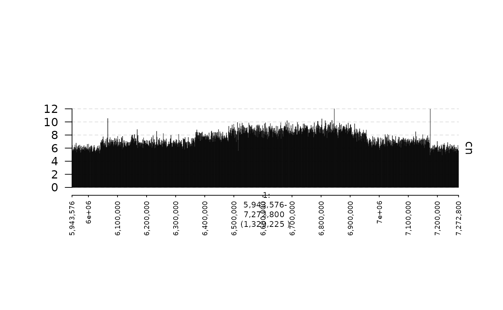
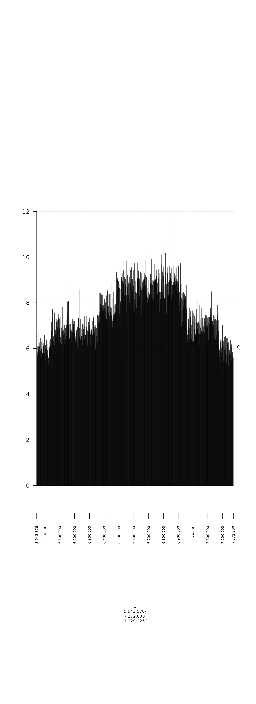
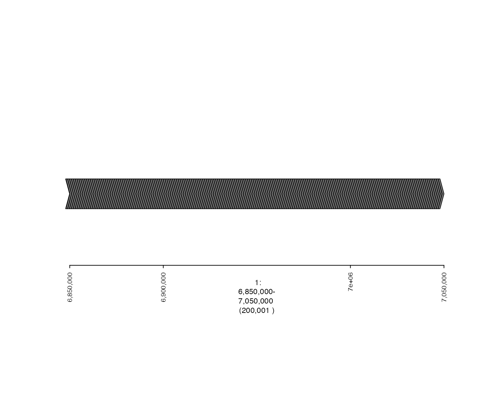
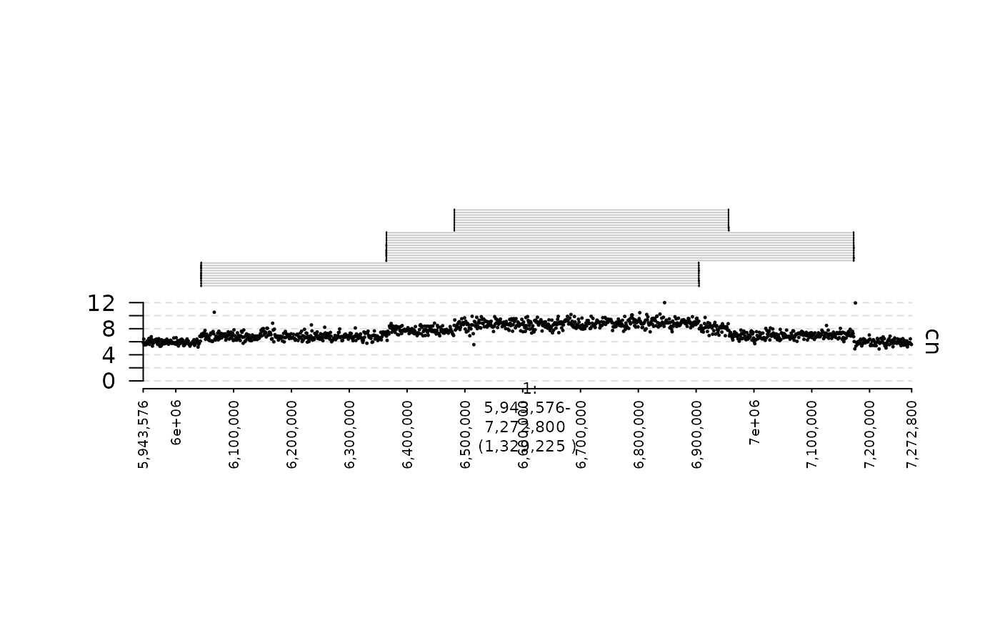
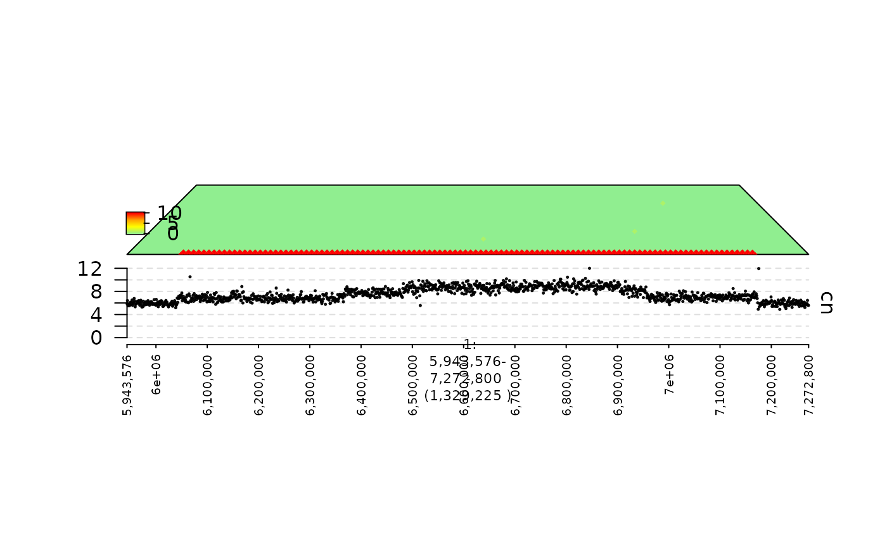
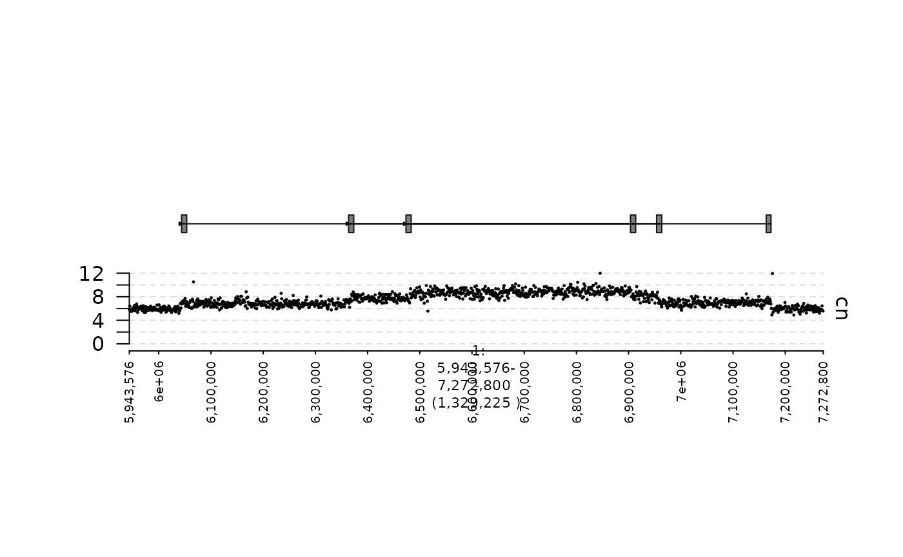
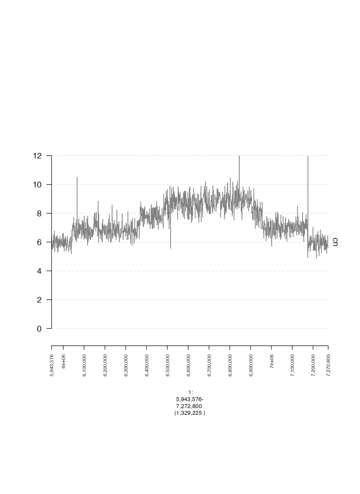
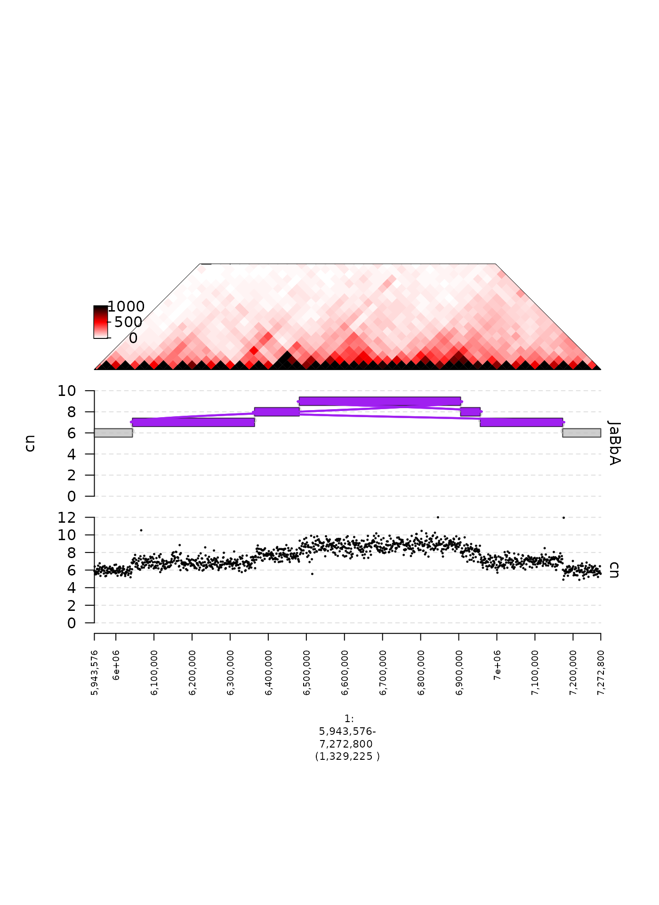

Creating and plotting gTracks
Source:../../../../groups/imielinski_lab/home/zchoo/git/gTrack/vignettes/quickstart.rmd
quickstart.rmdgTrack is a package that enables easy plotting of data across genomic intervals. This is a short tutorial that explains how gTracks can be created and plotted. For this example, we will use a pyrgo locus from the ovarian carcinoma cell line OVCAR-3.
In general, gTracks can be created from GRanges, GRangesList, and Matrix objects. In addition, we have written a some R packages (gGnome and GxG) in which R6 objects (namely gGraph, gWalk, and gMatrix) include a gTrack constructor (usually invoked by calling the $gt active field or $gtrack method).
GRanges
GRanges can be used as the starting point for creating scatter plots, bar plots, and line plots. The x-coordinate of each data point in these plots is specified by the genomic position, while the y-coordinate is stored in a user-defined metadata column of the GRanges object.
In this example, we will create gTracks to plot read depth in 1 Kbp genomic intervals.
Scatter plot
In this first example, we will create a scatter plot. The (normalized) read depth is contained in a metadata column called cn. We need to specify this column name in the argument y.field when creating our gTrack. In addition, to create a scatter plot, we need to set the parameter circles to TRUE. The parameter lwd.border controls the size of the points in the scatter plot, the parameter y0 controls the starting position on the y axis, and the parameter y1 controls the ending position on the y axis.
coverage.gr = readRDS(system.file("extdata", "ovcar.subgraph.coverage.rds", package = "gTrack"))
coverage.gt = gTrack(coverage.gr, y.field = "cn", circles = TRUE, lwd.border = 0.2, y0 = 0, y1 = 12)To generate a plot, the plot method is used, which takes two positional arguments, a gTrack and a genomic window over which to generate the plot. The genomic window can be specified as either a GRanges, GRangesList, or a character vector that can be parsed as GRanges. (If window is NULL, then all genomic regions defined in the supplied gTrack will be plotted).
## specify genomic region that will be plotted
fp = parse.gr("1:6043576-7172800")
plot(coverage.gt, fp + 1e5)
Bar plot
Next, we will plot the same data as a bar plot. To do this, we will set the parameter bars to TRUE.
coverage.bars.gt = gTrack(coverage.gr, y.field = "cn", bars = TRUE, y0 = 0, y1 = 12)
plot(coverage.bars.gt, fp + 1e5)
Line plot
Finally, we will plot these data as a line plot, by setting lines to TRUE.
coverage.lines.gt = gTrack(coverage.gr, y.field = "cn", lines = TRUE, y0 = 0, y1 = 12)
plot(coverage.lines.gt, fp + 1e5)
Multiple plots
A useful feature of gTrack objects is that multiple tracks can be concatenated to produce stacked subplots, as shown in the following example. The direction of concatenation is from the bottom up (so the first gTrack corresponds with the bottom-most subplot and the final gTrack corresponds with the top-most subplot).
concatenated.gt = c(coverage.gt, coverage.bars.gt, coverage.lines.gt)
plot(concatenated.gt, fp + 1e5)
GRangesList
A gTrack can also be created from a GRangesList. This is desirable when plotting ranges that are grouped together in some way, such as alignments deriving from a single read pair.
In this example, we will create a gTrack from junction-supporting read pairs. Briefly, these are read pairs that form split, gapped, or discordant alignments, hinting at the existence of a genomic rearrangement.
The alignments associated with each read pair are represented by a single entry in this example’s GRangesList. In the corresponding gTrack, alignments from the same GRangesList entry are linked together by a light gray horizontal line, making it easy for them to be visually associated.
You can see that there are many junction-supporting reads associated with read depth change points in the coverage gTrack which makes sense because aberrant adjacencies can produce copy number variants.
reads = readRDS(system.file("extdata", "ovcar.subgraph.reads.rds", package = "gTrack"))
reads.gt = gTrack(reads)
plot(c(coverage.gt, reads.gt), fp + 1e5)
Matrices
Heatmaps (mdata)
A gTrack can be created from a GRanges and a corresponding adjacency matrix in order to plot associations between two genomic ranges. One example of this would be a heatmap, where the color of each cell is proportional to some value defined by its corresponding genomic regions.
In this example, we will create a heatmap of the number of shared read qnames between pairs of genomic intervals. We will read a GRanges and associated matrix and create a gTrack from these inputs, which we will plot alongside the coverage.
As you can see, the off-diagonal elements correspond with copy number changep points in the coverage!
mdata.mat = readRDS(system.file("extdata", "ovcar.subgraph.mdata.mat.rds", package = "gTrack"))
mdata.gr = readRDS(system.file("extdata", "ovcar.subgraph.mdata.gr.rds", package = "gTrack"))
heatmap.gt = gTrack(mdata.gr, mdata = mdata.mat, cmap.max = 10)
plot(c(coverage.gt, heatmap.gt), fp + 1e5)
Connections (edges)
Instead of a heatmap, it is also possible to plot the edges between genomic intervals by supplying an adjacency list. In this next example, we will plot edges associated with the off-diagonal squares in the previous heatmap.
```{r include = TRUE, message = FALSE, warning = FALSE edges.dat = readRDS(system.file(“extdata”, “ovcar.subgraph.edges.dat.rds”, package = “gTrack”)) edges.gr = readRDS(system.file(“extdata”, “ovcar.subgraph.edges.gr.rds”, package = “gTrack”))
edges.gt = gTrack(edges.gr, edges = edges.dat)
plot(c(coverage.gt, edges.gt), fp + 1e5) ```
gGraph
gGraphs are genome graphs in which nodes represent (signed) genomic intervals, and edges represent adjacencies between those intervals (see our gGnome package here!).
A gTrack can be created from a gGraph using either the $gt active field or $gtrack method, as shown below. In this example, we will create a plot of a tumor gGraph and the associated coverage profile.
gg = readRDS(system.file("extdata", "ovcar.subgraph.rds", package = "gTrack"))
plot(c(coverage.gt, gg$gt), fp + 1e5)
gWalk
gWalks represent paths through a gGraph. Generally, they represent somatic haplotypes that could exist in a genome corresponding with a give gGraph (more details in the gGnome package!). Like gGraphs, gWalks have active field $gt and method $gtrack, both of which will produce a gTrack.
The following example plots a set of gWalks associated with the gGraph plotted above.
wks = readRDS(system.file("extdata", "ovcar.subgraph.walks.rds", package = "gTrack"))
plot(c(coverage.gt, gg$gt, wks$gt), fp + 1e5)
gMatrix
gMatrix is an object implemented in the package GxG that facilitates analysis and visualization of paired genomic intervals. There are many use cases for gMatrix, but the one used in this example is Hi-C data, which consists of read counts shared by pairs of genomic bins. We will plot the Hi-C profile associated with this locus.
Again, similar to gWalk and gGraph, a gTrack can be created for a gMatrix with the active field $gt or method $gtrack. Here we will use the $gtrack method to set a parameter for coloring the heatmap (cmap.max).
gm = readRDS(system.file("extdata", "ovcar.subgraph.hic.rds", package = "gTrack"))
plot(c(coverage.gt, gg$gt, gm$gtrack(cmap.max = 1000)), fp + 1e5)